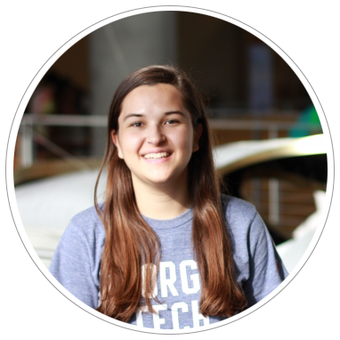
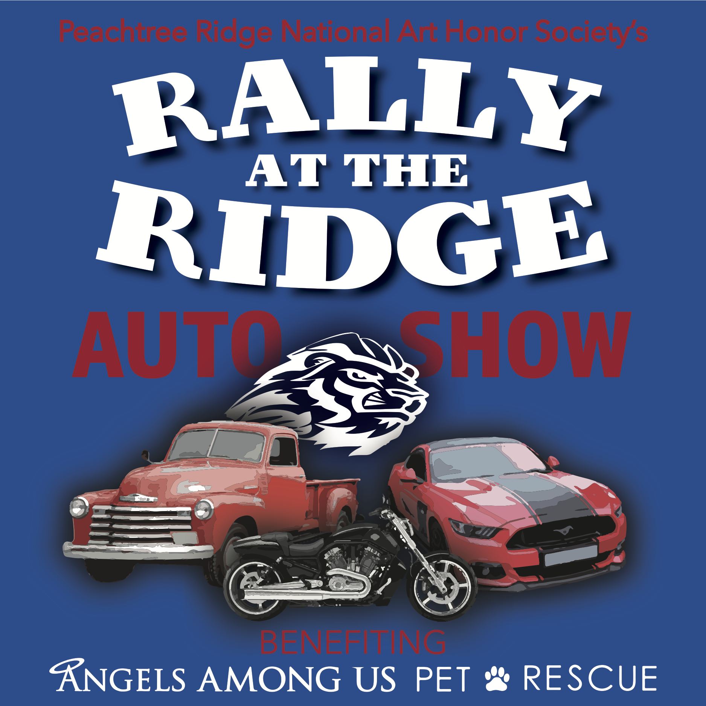
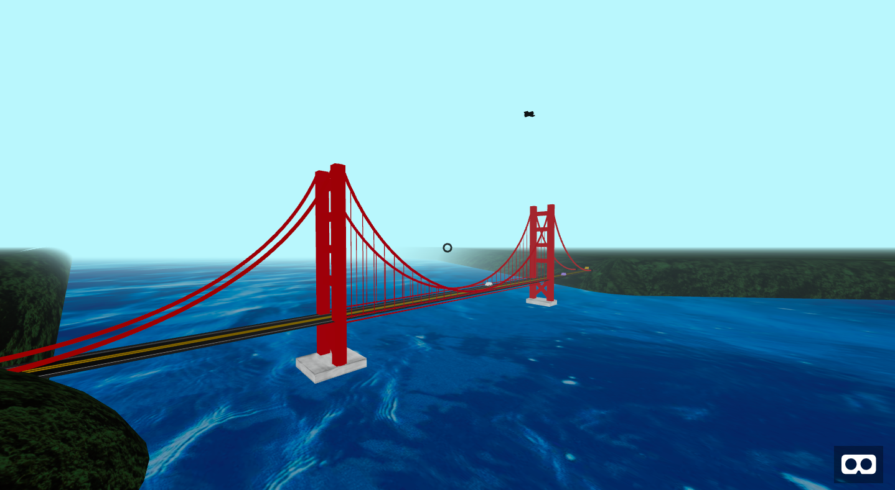
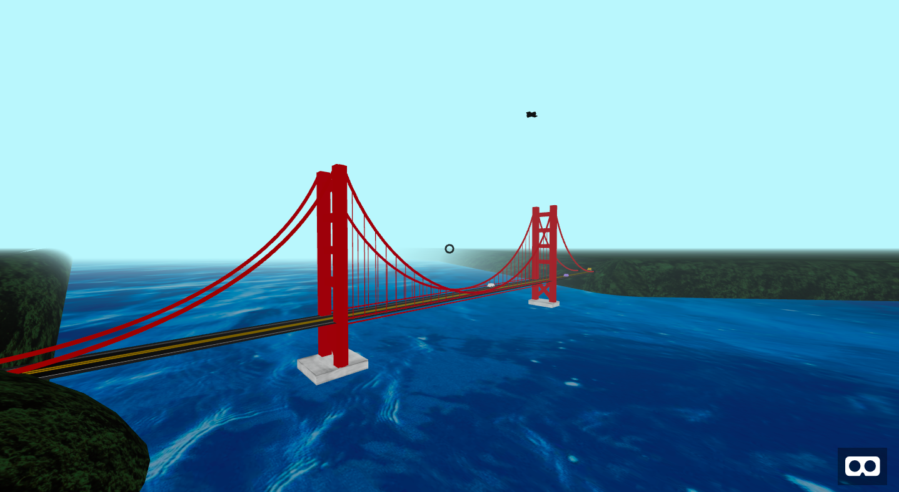
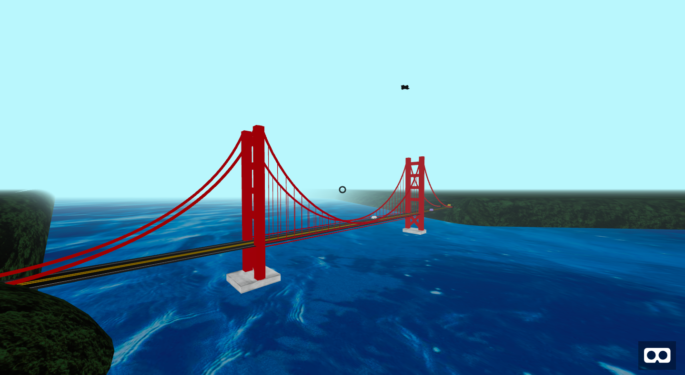

I am from Duluth, Georgia, have lived there my entire life, and couldn't imagine being anywhere else than idyllic suburban Georgia.
My parents met when they were students at Georgia Tech, so I've always grown up in a Tech house and travelled down to the city pretty often for football games. Both of my older siblings also ended up going to Tech, so I was basically destined end up here.
Since I could remember, my parents had all three kids playing sports. I did my fair share of soccer games, softball games, and tennis matches throughout the years, but because of this, I ended up playing soccer for almost 12 years before I had surgery on both of my knees and ultimately had to quit since I now basically have the knees of the 90 year old.
Though this time was hard on me physically, I also had a lot of recovery time just sitting on the couch in which I was able to develop my skills as a digital designer, specifically through the Adobe Creative Suite. I was able to become a sort of freelance worker at my highschool and created designs for any event, club, or need presented to me. During this time, I was able to apply my design skills and notice my interest in digital design and eventually computational media.
Check out some of the things I've made!

 

